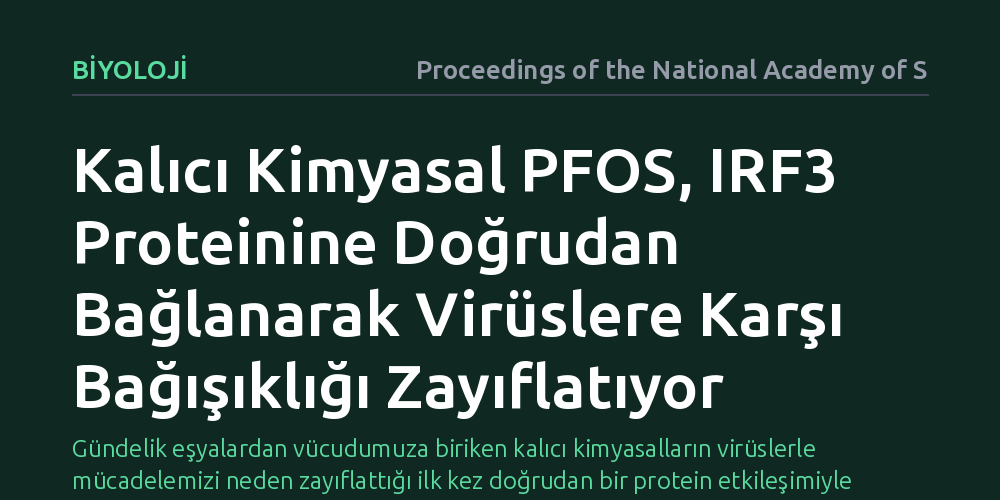

BIYOLOJI · Proceedings of the National Academy of Sciences · 2026-10-07
Araştırmacılar, yaygın bir kalıcı kimyasal olan PFOS'un bağışıklık sistemini moleküler düzeyde nasıl baskıladığını inceledi. Çalışma, PFOS'un doğrudan IRF3 proteinine bağlanarak virüslere karşı üretilen tip I interferon yanıtını engellediğini ve antiviral savunmayı zayıflattığını ortaya koydu.
Gündelik eşyalardan vücudumuza biriken kalıcı kimyasalların virüslerle mücadelemizi neden zayıflattığı ilk kez doğrudan bir protein etkileşimiyle açıklandı.

Gündelik yaşamda teflon kaplamalardan su geçirmez giysilere, leke tutmayan kumaşlardan gıda ambalajlarına kadar pek çok alanda perfloroalkil maddeler (PFAS) kullanılmaktadır. Bu kimyasalların en yaygın türlerinden biri olan perflorooktan sülfonat (PFOS), kimyasal bağlarının olağanüstü direnci nedeniyle doğada ve canlı dokularında parçalanmadan yıllarca kalabilmektedir. Daha önceki gözlemler ve hayvan deneyleri, PFOS maruziyetinin bağışıklık sistemini baskıladığını ve aşı yanıtlarını zayıflattığını göstermişti; fakat bu maddenin bağışıklık hücrelerinin içine girip hangi moleküler mekanizmayı bozduğu bugüne kadar bilinmiyordu.
Virüsler hücrelerimize girdiğinde, vücudumuzun ilk tepkisi doğuştan gelen bağışıklık mekanizmalarını devreye sokmaktır. Bu erken savunmanın en kritik unsuru, enfekte olan hücrelerin komşu hücreleri uyarmak amacıyla salgıladığı tip I interferon molekülleridir. Eğer bu hücresel alarm zamanında ve yeterli düzeyde verilemezse, virüs hızla çoğalır ve enfeksiyon kontrol altına alınamaz. Araştırmacılar, PFOS'un bu erken viral savunma hattını hücresel düzeyde nasıl sekteye uğrattığı sorusunu aydınlatmayı amaçladı.
Araştırma ekibi, bağışıklık hücrelerinin virüslere yanıt verme sürecini laboratuvar ortamında moleküler düzeyde incelemeye aldı. Hücre kültürü modellerinde, viral uyarana maruz kalan hücrelerin savunma basamakları adım adım takip edildi. Çalışmanın odağında, virüs varlığını tespit edip hücre çekirdeğine alarm genlerini açma emrini ileten 'İnterferon Düzenleyici Faktör 3' (IRF3) adlı kilit transkripsiyon faktörü yer aldı.
Ekip, PFOS molekülünün hücre içinde genel bir zehirlenme mi yarattığını yoksa doğrudan IRF3 proteiniyle mi etkileştiğini test etmek için biyokimyasal bağlanma ve protein analiz yöntemlerini kullandı. Farklı dozlarda PFOS uygulanan hücrelerde, IRF3 proteininin fosforillenme oranı, ikili yapılar (dimer) oluşturma yeteneği ve hücre çekirdeğine geçerek interferon genlerini etkinleştirme kapasitesi ayrıntılı şekilde ölçüldü.
Deneylerin sonucunda, PFOS'un hücre içinde genel bir yan etki üretmenin ötesine geçerek doğrudan IRF3 proteinine fiziksel olarak bağlandığı keşfedildi. Sağlıklı bir hücrede virüs tespit edildiğinde IRF3 proteini fosforillenir, ikili eşleşmeler oluşturur ve çekirdeğe girerek tip I interferon üretimini tetikler. Ancak PFOS molekülü IRF3'e bağlandığında, proteinin fosforilasyonunu ve ikili yapı kurmasını engelleyerek onu işlevsiz kılmaktadır.
Bu doğrudan engelleme nedeniyle, virüsle enfekte olan hücreler yeterli miktarda tip I interferon salgılayamamaktadır. Erken uyarı alarmı susturulduğu için komşu hücreler antiviral duruma geçememekte ve virüsün hücreler arasında yayılması kolaylaşmaktadır. Çalışma, PFOS kaynaklı bağışıklık zayıflamasının ardında doğrudan bir protein etkileşiminin yattığını somut biçimde göstermektedir.
Bu bulgu, çevre kirliliği ile enfeksiyon duyarlılığı arasındaki biyolojik bağlantıyı moleküler düzeyde açıklığa kavuşturmaktadır. Kalıcı kimyasalların sağlığa olumsuz etkileri uzun süredir tartışılsa da, bağışıklık üzerindeki baskılanma genellikle dolaylı mekanizmalarla açıklanıyordu. PFOS'un kritik bir antiviral proteine doğrudan bağlanarak onu etkisiz hale getirdiğinin anlaşılması, bu kimyasallara maruz kalan canlıların virüslere neden daha açık hale geldiğini netleştirmektedir.
Bununla birlikte, çalışmanın laboratuvar ortamındaki hücre modelleriyle sınırlı olduğunu ve doğrudan insan klinik verilerini içermediğini vurgulamak gerekir. Günlük yaşamda maruz kalınan düşük düzeydeki PFOS birikiminin insan vücudundaki genel viral direnci ne ölçüde etkilediğini kesinleştirmek için daha ileri epidemiyolojik çalışmalara ihtiyaç duyulmaktadır. Yine de elde edilen kanıtlar, kalıcı kimyasalların sınırlandırılmasına yönelik küresel çevre ve halk sağlığı düzenlemelerinin bilimsel temelini güçlendirmektedir.